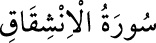

<a name=10531></a><br/>
<b>84- el-İNŞİKAK SÛRESİ</b><br/>
<i><b>İnfitâr sûresinden sonra Mekke’de inmiştir, 25 âyettir. Göğün yarılmasından söz</b></i><br/>
<i><b>ettiği için bu adı almıştır.</b></i><br/>
